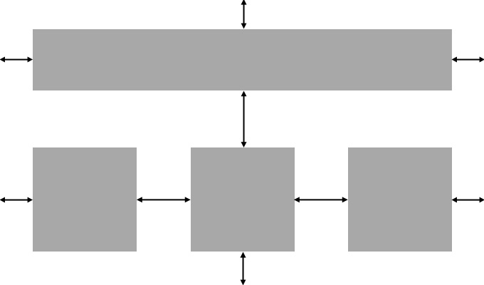
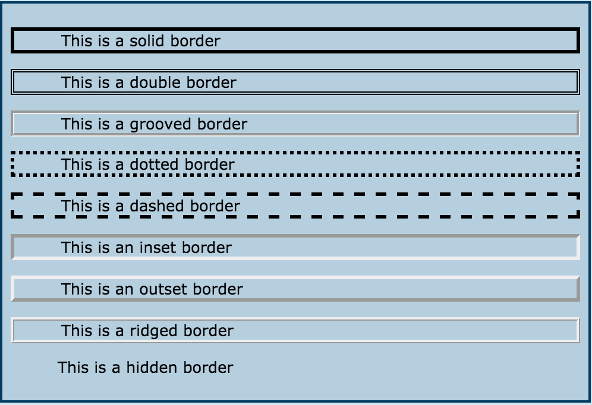
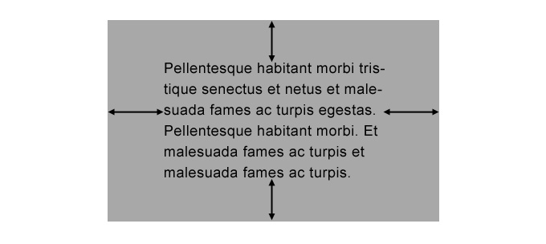

DBC-Technical Blog:
Date: 07.21.15
Entry #: 2
Commentary: Today I wanted to speak to you regarding the differences between Margin, Border, and Padding. I will try to use the simplest of terms to explain what they do and how you can use them. Foremost, one must understand the concept of CSS 'boxes' shown below:
Margin: Applies to the outside of an element; it affects the space between two text boxes, for instance. See example below:

Border: Applies to every 'element' of CSS design 'box'. It is the box that encompasses the content, in which you can make the border style different or the increase/decrease the 'thickness' of the lines of the box. See example below:

Padding: Applies to the inside of an element; it affects the space between the text box and the actual text content presented inside of the box. See example below:
